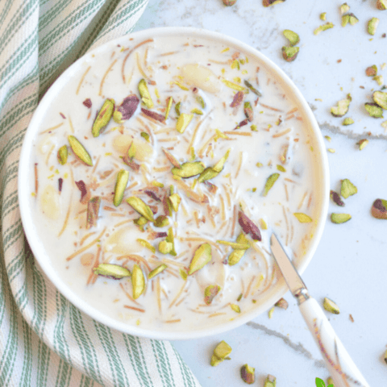

Sweet Vermicelli Kheer

Vermicelli is simmered in full cream milk sweetened with sugar and flavoured with almonds, cashew nuts and crushed cardamom.
This delicious kheer is perfect to celebrate any festival or special occasion.
Ingredients
- 100 gm Vermicelli
- 10 gm Desi Ghee
- 400 ml Full Cream Milk
- 10 gm Almonds
- 50 gm Sugar
- 20 gm Cashew Nuts
- 0.5 gm Cardamom
Steps
- Wash vermicelli and put it in a sauce pan along with ghee and stir for 2 mins.
- Add milk and sugar and stir well.
- Simmer for about 1 hour or till milk reduces to half and of creamy consistency. During this period stir from time to time.
- Add almonds and cashew nuts. Sprinkle crushed cardamom. Enjoy hot or cold!
Back to Homepage